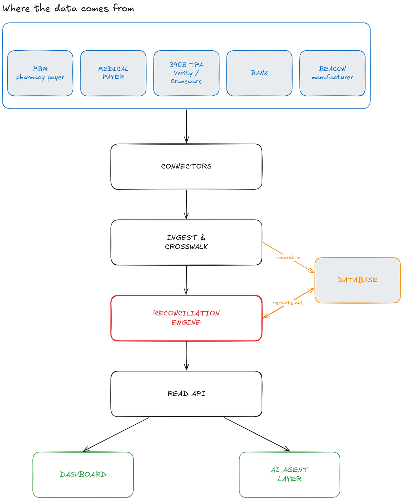
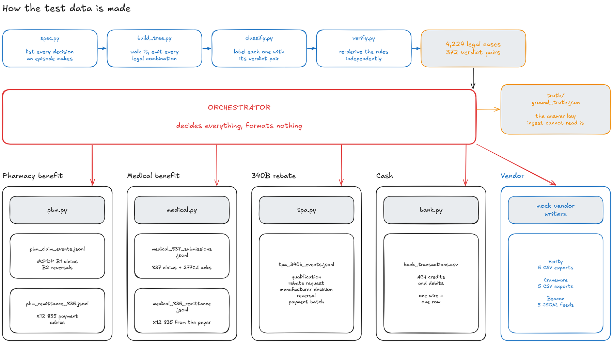
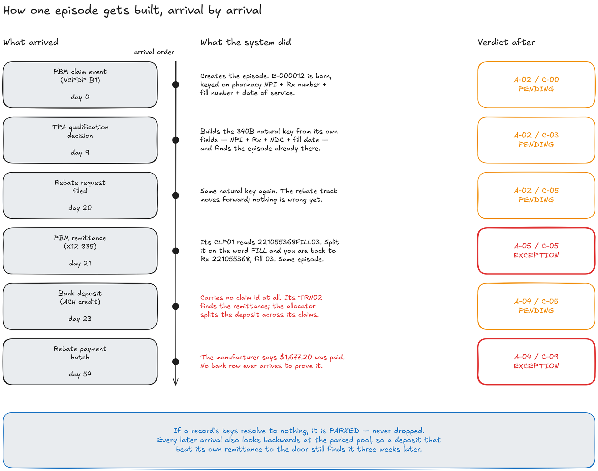
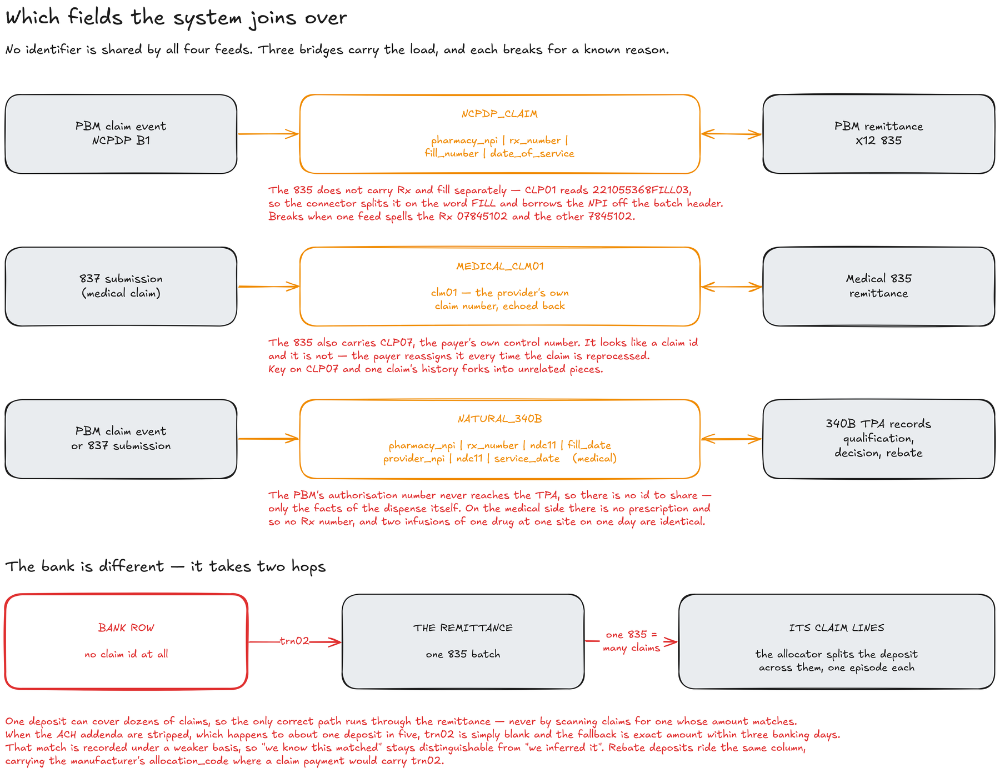
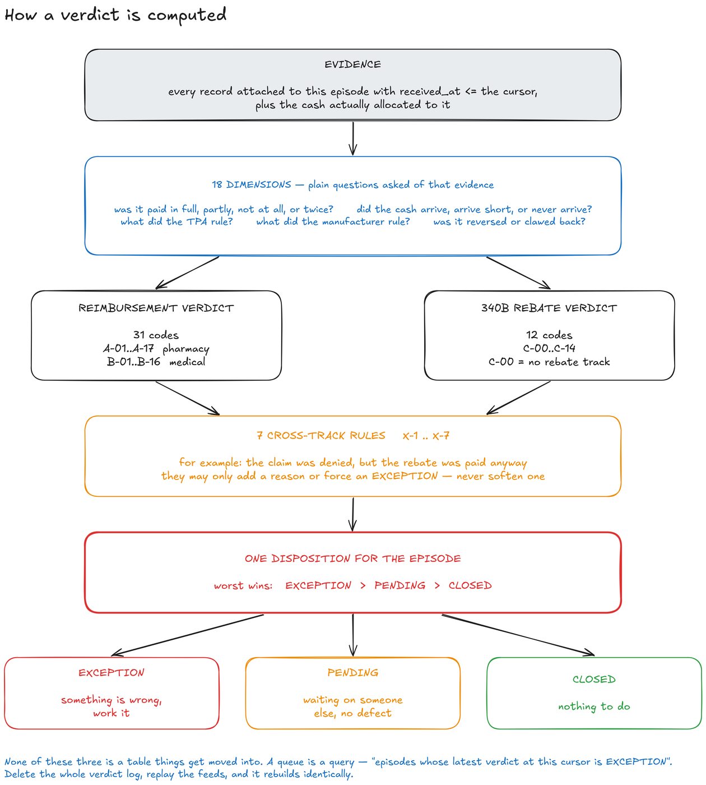
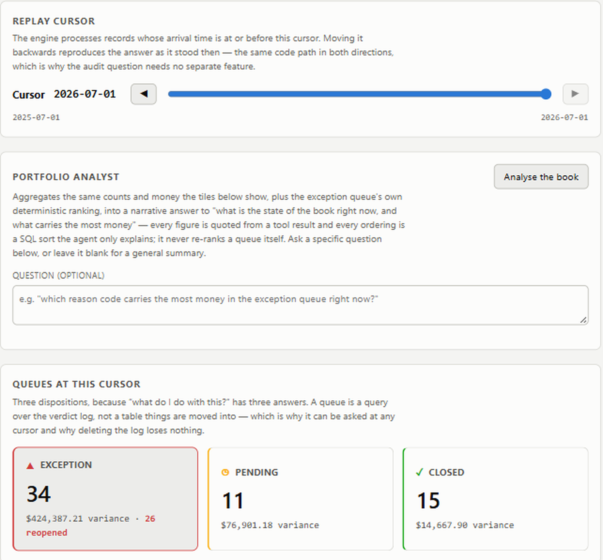
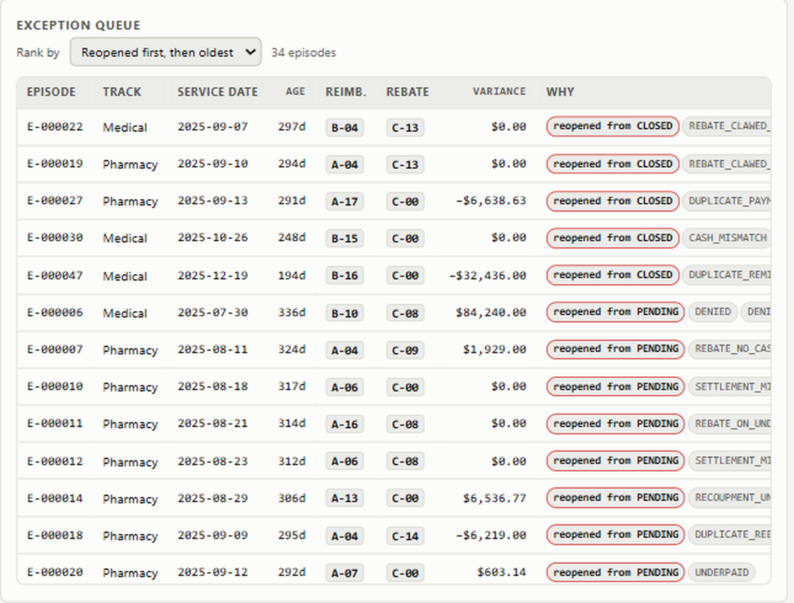
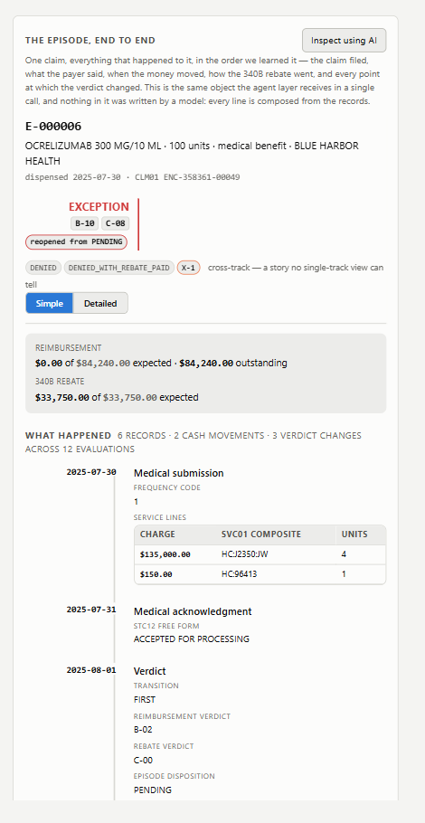
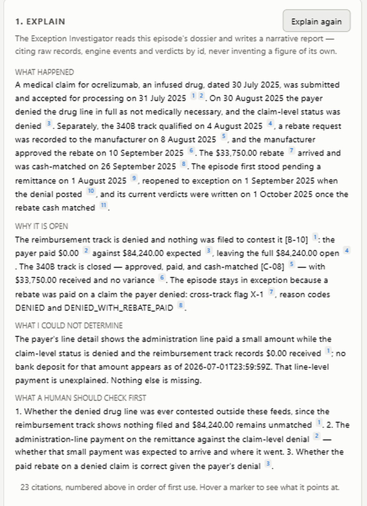

Four independent feeds, no shared claim number, and one question: what were we owed, what arrived, and what needs a human?
Every number is computed in Python. The model only explains numbers it was handed.
Pills at a counter, billed to a PBM. Adjudicated in seconds, paid in weeks.
Drugs infused in a chair, billed to a medical payer via a clearinghouse.
A manufacturer owes cash back — but only once a TPA rules the dispense qualifies.
Owes nothing. It is the only proof the other three actually landed.
Nobody sends the hospital a statement saying here is what you are owed and here is what you got. That statement is the product.
Every design decision is one of these three wearing a different hat
Nothing carries one claim number end to end. There is no shared ID. That is the hard part — not the arithmetic.
The system never guesses. A wrong match looks identical to a correct one in every report afterwards, so it parks instead.
Everything is a replay. Delete every answer it has produced, feed it the same files, get the same answers back.

The one write creates a work item for a human. Role tool lists are built by removing it, so no prompt can reach it — and the record names the person who pressed the button, not the model.




Stated, not hidden: no authentication and no tenant isolation yet; five of the 1,354 resolvable episodes do not reproduce their intended verdict; one query-plan test fails and is reported as a failure rather than rounded to green.
Demo
A React dashboard over the read API, an episode dossier, the connector fabric, and an agent layer that explains but never calculates.




Live